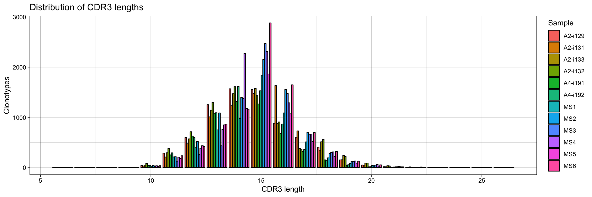
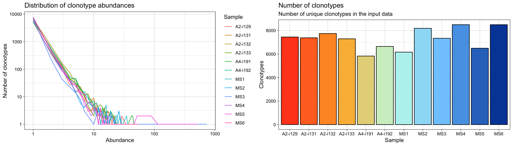
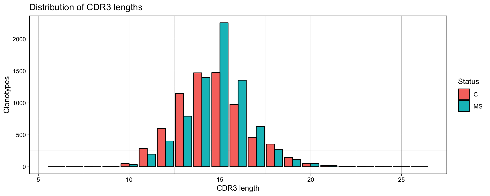
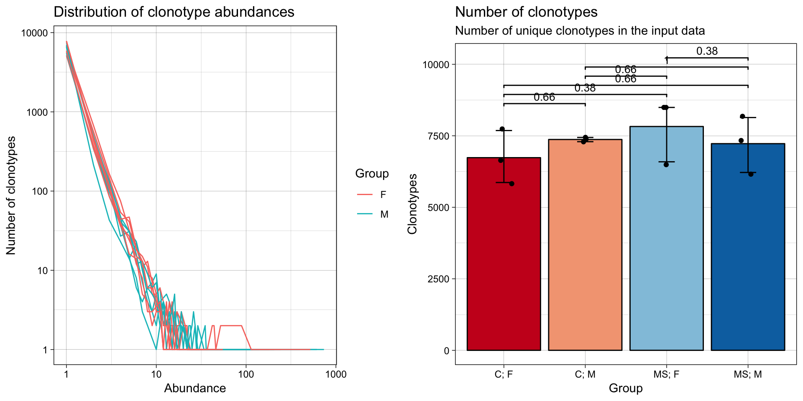
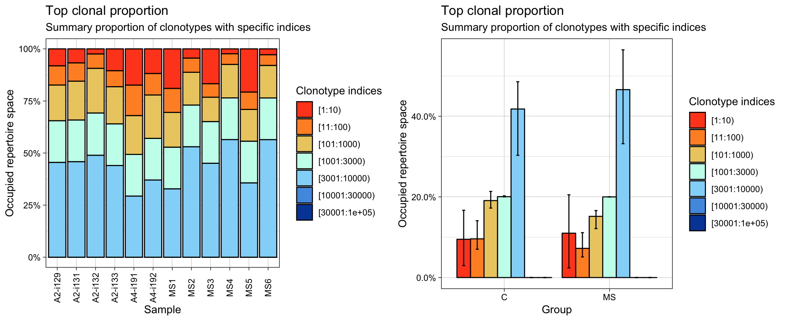
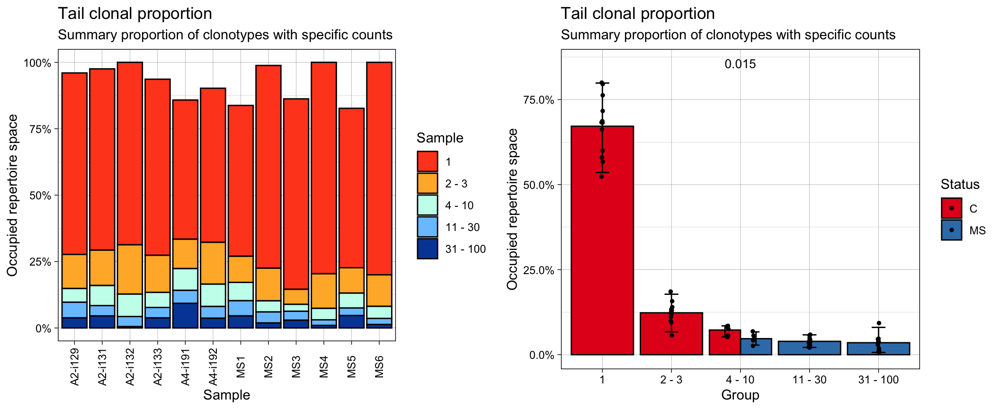
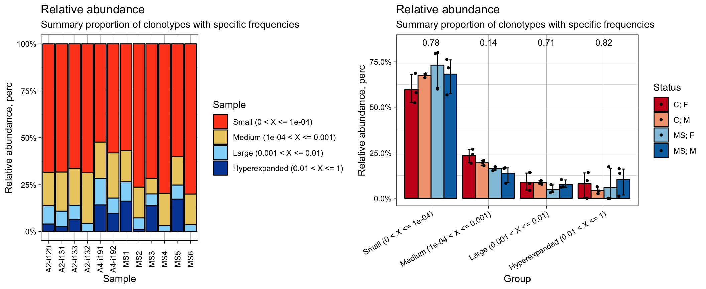

For each task in this section immunarch includes separate functions that are generally self-explanatory and are written in camel-case. Shorter names for the functions are also availbalie, although the authors do not recommend their usage for the sake of clarity and readability of the code. The latter are mentionned in parantheses. Basic analysis functions are:
repExplore (rep.ex) - to compute basic statistics, such as number of clones or distributions of lengths and counts. To explore them you need to pass the statistics, e.g. count, to the .method.
repClonality (rep.clo) - to compute the clonality of repertoires.
repOverlap (rep.ov) - to compute the repertoire overlap.
repOverlapAnalysis (rep.ova) - to analyse the repertoire overlap, including different clustering procedures and PCA.
geneUsage (gen.us) - to compute the distributions of V or J genes.
geneUsageAnalysis (gen.usa) - to analyse the distributions of V or J genes, including clustering and PCA.
repDiversity (rep.div) - to estimate the diversity of repertoires.
trackClonotypes (tr.clo) - to analyse the dynamics of repertoires across time points.
spectratype - to compute spectratype of clonotypes.
Output of each function could be passed directly to the vis function - the general function for visualisation. Examples of usage are written below.
Plots generated by the vis function can be passed to fixVis - built-in software tool for making publication-ready plots. See the “Quick start” section for usage.
For the basic exploratory analysis such as comparing of number of reads / UMIs per repertoire or distribution use the function repExplore.
exp_len = repExplore(immdata$data, .method = "len", .col = "aa")
exp_cnt = repExplore(immdata$data, .method = "count")
exp_vol = repExplore(immdata$data, .method = "volume")
p1 = vis(exp_len)
p2 = vis(exp_cnt)
p3 = vis(exp_vol)
p1
grid.arrange(p2, p3, ncol = 2)
# You can group samples by their metainformation
p4 = vis(exp_len, .by="Status", .meta=immdata$meta)
p5 = vis(exp_cnt, .by="Sex", .meta=immdata$meta)
p6 = vis(exp_vol, .by=c("Status", "Sex"), .meta=immdata$meta)
p4
grid.arrange(p5, p6, ncol = 2)
One of the ways to estimate the diversity of samples is to evaluate clonality. repClonality measures the amount of the most or the least frequent clonotypes. There are several methods to assess clonality, let us take a view of them. The clonal.prop method computes the proportion of repertoire occupied by the pools of cell clones:
imm_pr = repClonality(immdata$data, .method = "clonal.prop")
imm_pr## Clones Percentage Clonal.count.prop
## A2-i129 18 10.1 0.0023834746
## A2-i131 28 10.1 0.0036905233
## A2-i133 9 10.2 0.0012160519
## A2-i132 115 10.0 0.0145680263
## A4-i191 4 11.7 0.0006740816
## A4-i192 8 10.6 0.0011931394
## MS1 3 12.2 0.0004775549
## MS2 69 10.0 0.0083102493
## MS3 2 10.8 0.0002663116
## MS4 185 10.0 0.0213971779
## MS5 2 10.2 0.0003044603
## MS6 167 10.0 0.0193197594
## attr(,"class")
## [1] "matrix" "immunr_clonal_prop"The top method considers the most abundant cell clonotypes:
imm_top = repClonality(immdata$data, .method = "top")
imm_top## 10 100 1000 3000 10000 30000 1e+05
## A2-i129 0.0812 0.1735 0.3448 0.5448 1 1 1
## A2-i131 0.0671 0.1550 0.3413 0.5413 1 1 1
## A2-i133 0.1047 0.1815 0.3599 0.5599 1 1 1
## A2-i132 0.0242 0.0934 0.3077 0.5106 1 1 1
## A4-i191 0.1738 0.3201 0.5066 0.7066 1 1 1
## A4-i192 0.1182 0.2214 0.4295 0.6295 1 1 1
## MS1 0.1897 0.3050 0.4718 0.6718 1 1 1
## MS2 0.0442 0.1124 0.2697 0.4697 1 1 1
## MS3 0.1671 0.2321 0.3490 0.5490 1 1 1
## MS4 0.0235 0.0745 0.2354 0.4354 1 1 1
## MS5 0.2073 0.2907 0.4431 0.6431 1 1 1
## MS6 0.0279 0.0794 0.2356 0.4356 1 1 1
## attr(,"class")
## [1] "matrix" "immunr_top_prop"While the tail method deals with the least prolific clonotypes:
imm_tail = repClonality(immdata$data, .method = "tail")
imm_tail## 1 3 10 30 100
## A2-i129 0.6831 0.8112 0.8629 0.9217 0.9601
## A2-i131 0.6820 0.8152 0.8911 0.9298 0.9754
## A2-i133 0.6626 0.8025 0.8593 0.8982 0.9365
## A2-i132 0.6865 0.8721 0.9569 0.9946 1.0000
## A4-i191 0.5236 0.6343 0.7162 0.7653 0.8582
## A4-i192 0.5798 0.7371 0.8212 0.8654 0.9025
## MS1 0.5673 0.6661 0.7347 0.7918 0.8377
## MS2 0.7627 0.8856 0.9276 0.9690 0.9882
## MS3 0.7166 0.7733 0.7994 0.8329 0.8625
## MS4 0.7955 0.9258 0.9693 0.9902 1.0000
## MS5 0.6000 0.6953 0.7516 0.7799 0.8269
## MS6 0.7998 0.9182 0.9640 0.9867 1.0000
## attr(,"class")
## [1] "matrix" "immunr_tail_prop"Finally, the homeo method assesses the clonal space homeostasis, i.e., the proportion of the repertoire occupied by the clones of a given size:
imm_hom = repClonality(immdata$data, .method = "homeo")
imm_hom## Rare (0 < X <= 1e-05) Small (1e-05 < X <= 1e-04)
## A2-i129 0 0.6831
## A2-i131 0 0.6820
## A2-i133 0 0.6626
## A2-i132 0 0.6865
## A4-i191 0 0.5236
## A4-i192 0 0.5798
## MS1 0 0.5673
## MS2 0 0.7627
## MS3 0 0.7166
## MS4 0 0.7955
## MS5 0 0.6000
## MS6 0 0.7998
## Medium (1e-04 < X <= 0.001) Large (0.001 < X <= 0.01)
## A2-i129 0.1798 0.0972
## A2-i131 0.2091 0.0843
## A2-i133 0.1967 0.0772
## A2-i132 0.2704 0.0431
## A4-i191 0.1926 0.1420
## A4-i192 0.2414 0.0813
## MS1 0.1674 0.1030
## MS2 0.1649 0.0606
## MS3 0.0828 0.0631
## MS4 0.1738 0.0307
## MS5 0.1516 0.0753
## MS6 0.1642 0.0360
## Hyperexpanded (0.01 < X <= 1)
## A2-i129 0.0399
## A2-i131 0.0246
## A2-i133 0.0635
## A2-i132 0.0000
## A4-i191 0.1418
## A4-i192 0.0975
## MS1 0.1623
## MS2 0.0118
## MS3 0.1375
## MS4 0.0000
## MS5 0.1731
## MS6 0.0000
## attr(,"class")
## [1] "matrix" "immunr_homeo"

